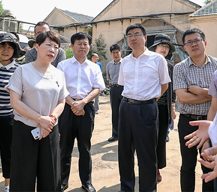
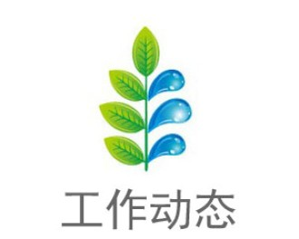
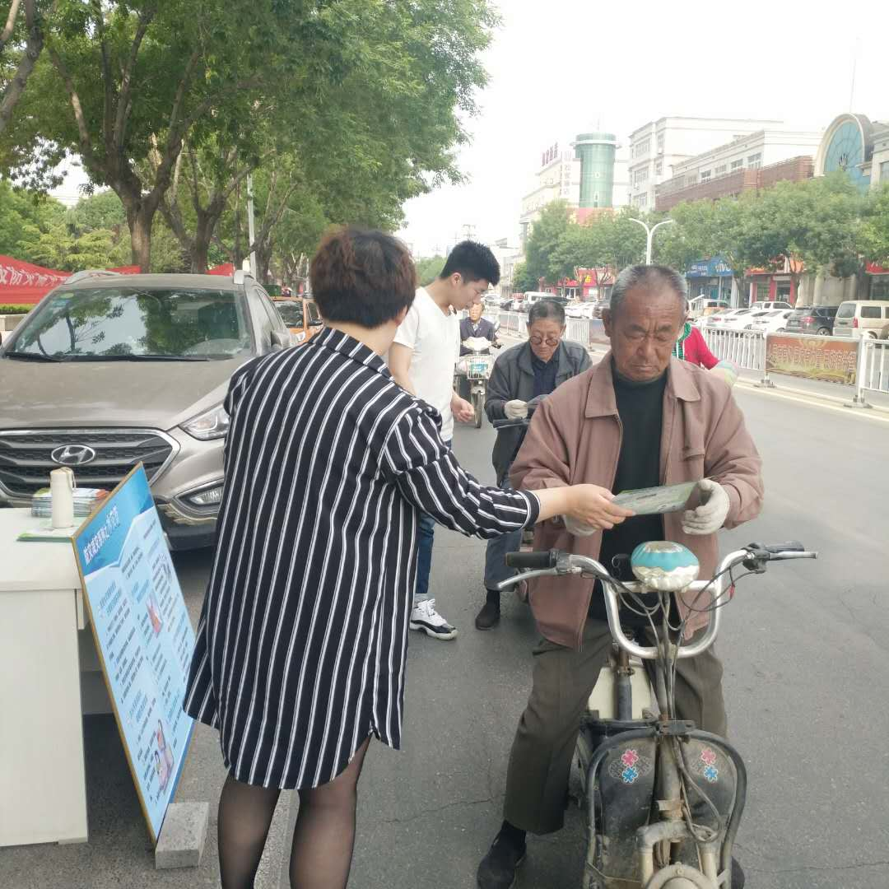
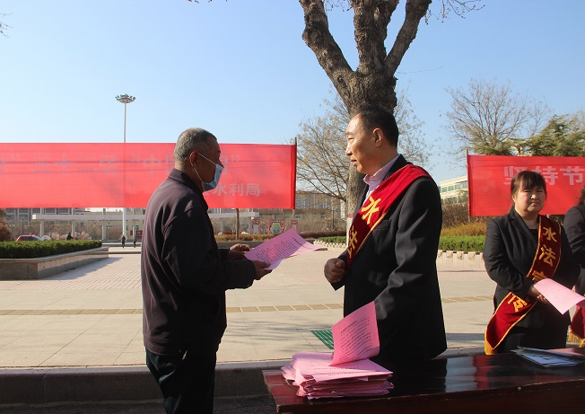

水利部技术评估组对宁津县地下水压采工作进行技术评估
6月14日，水利部水资源管理中心副主任张淑玲带领技术评估组一行7人对宁津县2018年度南水北调东中线一期工程受水区地下水压采工作进行技术评估。省水利厅水资源处处长李光、市水利局局长邢朝峰、宁津县县委书记王刚等陪同。

宁津县河湖及水利工程管理范围和保护范围划定公告
按照《宁津县人民政府关于宁津县河湖及水利工程管理范围和保护范围划定工作实施方案的批复》要求，宁津新河、宁北河等河道、水库管理范围和保护范围已完成划定。根据《中华人民共和国水法》等法律法规的规定，现公告如下
县水利局刘春生被评为“宁津县优秀科技工作者”
5月30日是第三个“全国科技工作者日”，宁津县庆祝“全国科技工作者日”暨“首届宁津县优秀科技工作者”表彰大会召开。此次共评选出25位“首届宁津县优秀科技工作者”，县水利高级工程师刘春生榜上有名。

县水利局进行防灾减灾宣传活动
5月12日是我国第11个全国防灾减灾日，今年的主题是“提高灾害防治能力，构筑生命安全防线”，为做好此次“防灾减灾日”活动，5月10日，县水利局在中心街广场举行防灾减灾安全宣传活动。
宁津县召开河湖清违清障专题工作调度会
4月28日，县委书记、县总河长王刚召开全县总河长会议，县委副书记、县长、县总河长沙淑红，县委副书记毕志国、宣传部部长范淑香、副县长许书旺、县水利局主要负责人参加会议，会议传达刘炳国市长在全市河湖清违清障工作调度会上的讲话，并专题研究河湖清违清障工作。

县水利局：开展“世界水日”和“中国水周”主题宣传活动
3月22日是第二十七届“世界水日”，也是第三十二届“中国水周”的首日，今年中国水周的主题是“坚持节水优先，强化水资源管理”，为了唤起公众的节水意识，建立更全面水资源可持续利用体制和运行机制，县水利局工作人员走上街头，开展水法节约用水宣传日活动，倡导节水护水新理念。
2018年度续建配套节水改造项目施工七标段完工验收会在县水利局召开
5月20日，德州市潘庄灌区2018年度续建配套节水改造项目施工七标段完工验收会在县水利局召开。验收工作通过现场查看，听取汇报，审阅工程资料，认为本标段工程内容全部完成，各项指标均符合设计及施工规范要求，工程资料基本齐全，无质量安全事故。最终该工程质量评定为合格等级，顺利通过完工验收。